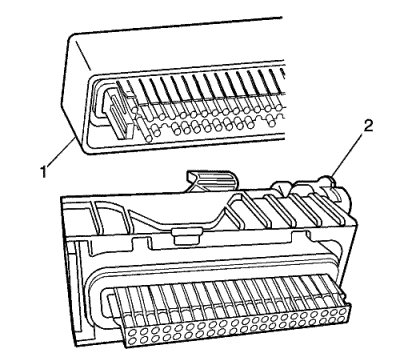
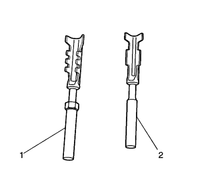
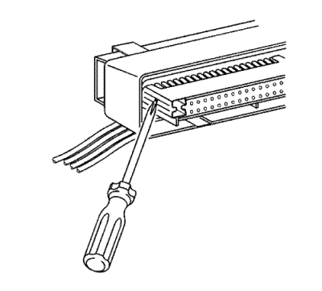
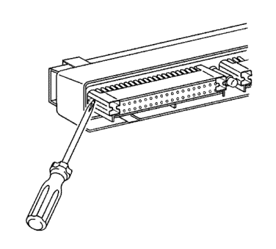
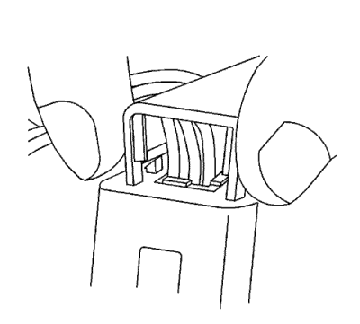
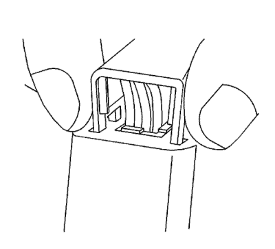
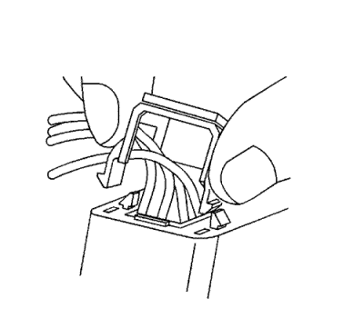
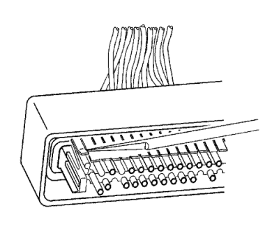

Conectores Delphi — Micro-Pack 100W
Herramientas especiales
| • | EL-38125-580 Juego de herramientas de liberación de terminales |
| • | Herramienta de desbloqueo de terminales J-38125-12A |
Si desea informarse sobre herramientas regionales equivalentes, consultar Herramientas especiales .
Procedimiento de extracción de terminales
Existen 2 estilos de conectores Micro-Pack 100W. Estos conectores son muy parecidos entre sí, pero utilizan diferentes terminales y también tienen otras pequeñas diferencias.

El diseño del primer conector de Micro-Pack 100W (1) tiene una interfaz de conector blanca que sujeta los terminales. El segundo diseño del Micro-Pack 100W (2) tiene una interfaz gris que sujeta los terminales. Asimismo, el primer diseño tiene cavidades de terminal que están más alejadas (3 mm de la línea de centro) y desfasadas de la otra fila de cavidades de terminal del conector. El segundo diseño tiene cavidades de terminal más cercanas entre sí (2,54 mm de la línea de centro) y están alineadas verticalmente. Otra forma de identificar el segundo diseño es la delgada tira de material que discurre por el exterior de las cavidades.

Nota: Hay 2 estilos de terminales Micro-Pack 100W que son muy similares. Asegúrese de tener el terminal correcto antes de engarzar el nuevo terminal al cable. El conector del primer diseño utiliza el terminal más largo (1), que tiene un área elevada enfrente del rebaje en el terminal. El conector del segundo diseño utiliza el terminal más corto sin el área elevada.
Siga el orden de los pasos indicados más abajo para extraer los terminales de conectores Micro-Pack 100W. Algunos procedimientos de montaje de conectores Micro-Pack 100W pueden variar. Utilice este procedimiento como guía.
- Separe el conector del componente.

- Localice las lengüetas de bloqueo de la pieza frontal que están situadas en el lateral de la pieza frontal del conector. La parte frontal del conector actúa como un seguro de posición del terminal (TPA) y también puede denominarse así.

- Utilice una herramienta pequeña de punta plana para empujar hacia dentro una de las lengüetas de bloqueo mientras tira del mismo lado de la pieza frontal.
- Repita el procedimiento con la otra lengüeta de bloqueo y extraiga la pieza frontal.
- Extraiga la tapa del cable. A continuación, se muestra un procedimiento general para extraer la tapa del cable. Utilice este procedimiento como guía, algunos procedimientos de extracción de la tapa pueden variar.

- Utilice los dedos para apretar las 2 patas de bloqueo de la tapa.

- Aplique presión y mueva con cuidado la tapa hasta que se desencaje una pata de bloqueo.

- Continúe aplicando presión y meciendo la tapa hasta que se desencaje la segunda pata de bloqueo. Repita el procedimiento con el otro lado de la tapa y extraiga la tapa.

- Utilice la herramienta J-38125-12A para levantar con cuidado la lengüeta de retención del terminal mientras tira con cuidado del cable hacia fuera de la parte posterior del conector. Recuerde siempre que nunca debe utilizar la fuerza a la hora de retirar un terminal de un conector.
- Si el terminal está muy doblado o dañado, en algunos conectores puede ser posible empujar el cable hacia fuera por la parte delantera del conector, en lugar de tirar de él. Esto evitará dañar las juntas internas del conector. Una vez que se haya empujado el terminal fuera del conector, corte el cable lo más cerca posible del terminal y tire del cable a través del conector.
- Repare el terminal siguiendo el procedimiento Reparaciones del terminal del conector : Reparación de Terminales → Reparación de cable con terminación .
- Vuelva a insertar el terminal reparado en la cavidad. Repita el procedimiento de diagnóstico para verificar la reparación y vuelva a conectar los cuerpos de los conectores.
Procedimiento de inserción de terminales
Una vez engarzado el terminal en el cable, realice el siguiente procedimiento para sustituir terminales Micro-Pack 100.
- Deslice el nuevo terminal en la cavidad correcta en la parte posterior del conector.
- Empuje el terminal dentro del conector hasta que se bloquee en su sitio. El terminal nuevo debe estar a nivel con los demás terminales. Para asegurarse de que el terminal está bloqueado en su sitio, tire suavemente del cable.
- Para montar el conector, realice a la inversa el procedimiento de extracción de terminal.
| © Copyright Chevrolet Europe. All rights reserved |